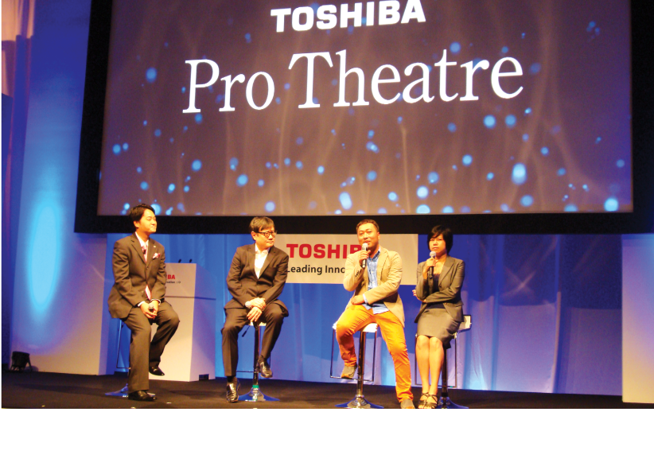

Nguyễn Quang Dũng - Xu hướng giải trí “HOT” nhất cho năm 2014?
Năm 2013 là một năm nhiều thành công đối với Nguyễn Quang Dũng, đạo diễn nắm trong tay hàng loạt phim điện ảnh thành công về mặt thương mại những năm gần đây. Những ai quan tâm đến Dũng “khùng” từ “Nụ hôn thần chết” hay “Những nụ hôn rực rỡ” hẳn không ngạc nhiên khi bom tấn 3D “Mỹ nhân kế” của anh tung hoành các rạp chiếu phim cả nước những ngày đầu năm 2013. “Mỹ nhân kế” đã thu về đến hơn 57 tỉ đồng sau 4 tuần công chiếu , khẳng định Dũng “Khùng” là một trong những đạo diễn “hạng sao” và là tên tuổi bảo chứng cho doanh thu của phim.
Đầu năm xem phim Dũng ngoài rạp, giữa và cuối năm người hâm mộ lại được tiếp tục gặp Dũng trên màn ảnh nhỏ, với tư cách là giám khảo cho nhiều chương trình truyền hình đình đám như Việt Nam Idol 2013. Không khó để nhận ra thương hiệu Dũng “khùng” đã được định vị với những lời nhận xét dí dỏm, thông minh và sâu sắc. Có lẽ vì vậy mà Dũng còn rất mát tay ở vị trí đạo diễn cho nhiều game show truyền hình, như chương trình “Người Giấu Mặt” đình đám vừa được đưa về Việt Nam năm vừa qua.
Trải nghiệm đẳng cấp 4K và xu hướng giải trí năm 2014
Một năm nhiều bận rộn là vậy nhưng Dũng “khùng” luôn dành thời gian cho sở thích sưu tầm và xem phim, như cách giải trí yêu thích và nghiên cứu, rèn luyện thêm cho nghề. Anh chàng “fan” cuồng của đồ công nghệ này đặc biệt thích tìm hiểu về những công nghệ hình ảnh mới nhất để phục vụ sở thích xem phim tại nhà. Là một đạo diễn điện ảnh, Dũng khá khó tính với các yêu cầu về chuẩn mực và chất lượng hình ảnh, đặc biệt là các điểm mịn của các điểm hình, độ tương phản và màu sắc.
“Nói thật là, từ quan điểm chuyên môn tôi không hài lòng lắm với TV của mình ở nhà” – Dũng chia sẻ. “Nghề nghiệp khiến tôi phải đảm bảo những bộ phim của mình khi ra rạp luôn đạt chất lượng cao nhất. Nhưng nhiều khi xem phim của chính mình tại nhà, chất lượng không thể đạt được như tôi mong muốn”. Nên khi có cơ hội được xem “Mỹ Nhân Kế” bằng tivi Toshiba L9300 4K Dũng nói anh rất bất ngờ vì chất lượng hình ảnh, màu sắc và các chi tiết đều cực kỳ sắc sảo. Là siêu phẩm đại diện cho dòng sản phẩm Toshiba Pro Theatre, tivi L9300 4K có độ phân giải gấp 4 lần các tivi Full HD với hơn tám triệu điểm ảnh trên màn hình Ultra HD nhờ sự kết hợp giữa tấm nền màn hình Ultra HD 4K và bộ vi xử lý độc quyền CEVO 4K. Đặc biệt, dù với các chất lượng trình chiếu chưa đạt chuẩn 4K như đầu đĩa Blu-ray hay DVD, bộ vi xử lý của L9300 vẫn cho phép tái tạo hình ảnh gần với chất lượng 4K đến hơn 90% và điều này đã gây ấn tượng sâu sắc đến Dũng ngay khi trải nghiệm Toshiba L9300. Ngoài ra, chức năng Intelligent Auto View của Pro Theatre giúp tối ưu chất lượng hình ảnh, tự động điều chỉnh ánh sáng nhiệt độ màu, ánh sáng đèn nền theo ánh sáng môi trường giúp cho những thước phim thêm tuyệt mỹ và sắc nét. Vì vậy, ngay cả một vị đạo diễn khó tính như Dũng cũng hoàn toàn bị chinh phục bởi tivi L9300 4K TV. Có lẽ, bạn không thể chú ý đến nhiều chi tiết như vầy cùng một lúc. Tuy nhiên, niềm tin về sự chuyên nghiệp như Dũng “khùng” có thể cho chúng ta biết rằng: “Đây là chất lượng thật sự của một chiếc TV mà nó có thể đem đến sự khác biệt cho một cảm giác điện ảnh thật sự”.
“Với TV L9300 trải nghiệm xem phim tại nhà đã được nâng lên tầm cao mới chất lượng hình ảnh chưa từng có trước nay. L9300 hoàn toàn làm thỏa mãn cả hai nhu cầu xem phim để giải trí và học hỏi nghiên cứu của một người làm phim chuyên nghiệp như tôi.” Hài lòng với những khuôn hình sống động của công nghệ Toshiba 4K, Quang Dũng nói tivi L9300 đã trở thành chọn lựa giải trí hàng đầu của anh trong năm 2014 và dự đoán xu hướng 4K sẽ tiếp tục chinh phục đông đảo người yêu công nghệ khi nhu cầu giải trí ngày càng cao. Khép lại một năm 2013 với nhiều sự kiện quan trọng trong nghề nghiệp và trải nghiệm cá nhân, Dũng hy vọng một năm mới có nhiều tác phẩm chất lượng, và mong muốn người hâm mộ phim ảnh ngày càng có những trải nghiệm giải trí đích thực cùng các sản phẩm công nghệ Toshiba Pro Theatre.